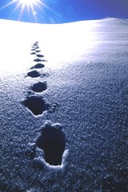

Новостя : Доскеры : Бродяги : Фотосы : Поприколу : Пиши сюда ! :
|
Don`t worry, Be Happy ! Новостя : Доскеры : Бродяги : Фотосы : Поприколу : Пиши сюда ! : |
ДОСКЕРЫ: сезон 2006-2007 29, 30, 1 мая 2007. Тальцинский на Первомай - авантюра с тропежкой не получилась! Снегоступы не пригодились, снега очень мало, заходили практически по "суше". Тропили подъем после Бабы и до верхнего лагеря, но это так, для разминки :) Наверху в цирке очень много лавинных выносов, но покататься было где и почти все раскатали, попутно спуская лавинки. В палаточном городке Жгунск обитало около 40 человек :) 21, 22 апреля 2007. Зима и лето. Закрытие мамайского сезона - по воле небес супер-замесы не состоялись, а на мамайской тропе шел обыкновенный дождь и пять сноубордистов... 14, 15 апреля 2007. Южное кольцо и северные кулуары - очередная покатушка на Мамае была весьма продуктивной на раскатаные кулуары, спущенные лавинки, прогулки в снегоступах и загоревшие лица... 1 апреля 2007. День Смеха в Мамайской Республике - ночной заход по партизански, инстинкты фрирайдеров, гавайские посиделки, самый веселый тамада, каменный фрирайд, антигравитация и прочий бред... 17, 18 марта 2007. Весна пришла на Мамай - солнце печет как в Африке, появились горнопляжники, однако снега вполне хватает для пары-тройки отличных спусков с Лесного и постройки снежной пещеры. 10, 11 марта 2007. Новый взгляд на Мамай - что ни день, то новые склоны. Обновили снегоступы, заценили радио-связь, прыгали с моста. 3 марта 2007. Мамай - туда и обратно. Ну типа я на денек после дня рождения забежал и мы с Лехой, Аней, Верой и Федей (которые там жили-были) катанули с гребня Мамая... Странички пока нету... 23, 24, 25 февраля 2007. Прогулки по Мамаю - два дня ходили-тропили на Лесной Пупырь, а еще много фотографировали и прыгали с кочек и трамплинов. 10, 11 февраля 2007.
Соревнования на Мамае 3, 4 февраля 2007.
Мамай ПВД 18, 19, 20, 21 января
2007. Мамай - коннектинг пипл! 13, 14 января 2007.
Старый Новый Год в Горной Стране 5, 6, 7, 8 января
2007. Новогодние каникулы 23, 24 дек.2006. Мамайский
Новый Год ! 19 дек.2006. Байкальские
трассы 9, 10 дек.2006. Мамайский
Як-Цуп-Цоп 2, 3 дек.2006. Открытие
сезона на горе Соболиная 25, 26 нояб.2006.
Мамай-тропинг 18, 19 нояб.2006.
З.О.Ж. на Мамае 4, 5, 6 нояб.2006.
Открытие зимнего сезона 2006-2007. 28, 29 окт.2006. Здравствуй,
Мамай ! |
 ДОСКЕРЫ Карта-схема Мамая Книга М. Отуотера В разделе "Фотосы" Тест-драйвы от Рассказ от Всем, кто идет впервые могу посоветовать идти с нами, но для начала читатайте
описания мест катания на сайте Angara.Net : Сайты в тему:
Доскинг - это фрирайд по нашему :) чем собственно мы и занимаемся зимой. А что делать, зима долгая, снега много, отдохнуть же как-то надо... Лыжинг - гоняем иногда на беговых лыжиках, по замерзшему Байкалу в январе-феврале-марте Тропинг - а бывает идешь покататься, а снег и мороз такой, что только и топчешь тропу в снегу по пояс, лишь бы только согреться, дойти живым до зимовья... russkiy ekstrim :)
|